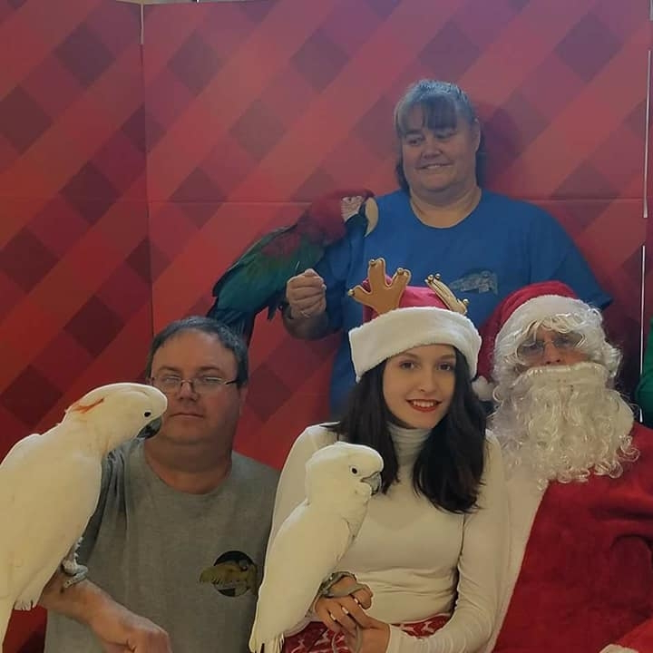
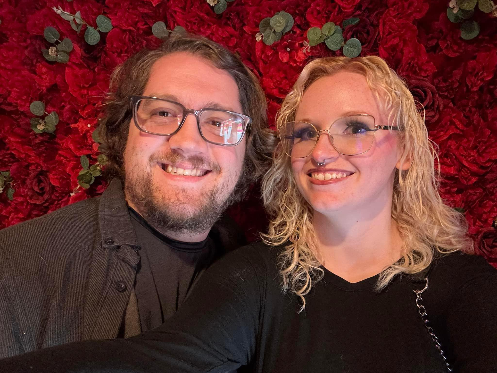

Meet the Team
The dedicated masterminds behind this amazing rescue who put their whole heart and soul into every bird they save.

Sherry and Jerry Johnson
heartandsoulparrots@gmail.comWe began Heart & Soul parrot rescue because we believed we could provide improved care for these amazing birds. We observed other rescues choosing the attractive birds but ignoring the pluckers or those with high vet bills in favor of quickly adoptable birds. We hoped our rescue would stand out.
We make an effort to collaborate with all individuals. We selected heart and soul for our rescue and parrots as we dedicate all of our heart and soul to them. We strive to carry out rescues in the correct manner. Embrace all individuals and show them the same care as you would your own family members.
When I was young, I always adored animals. At the age of 19, I became enamored with my initial parrot, a rose breasted cockatoo that I saw in a pet store, even though I never imagined owning one. Many years later, I discovered a rescue where I volunteered and fell in love with Merlin, my first adopted cockatoo.
Jerry, my husband, and I have been married for 29 years, and he has tolerated my chaotic life and enthusiasm. He consistently claims there are no more birds, but we always manage to make space for the emergencies. Once more, he is the reason this rescue organization exists.

Michelle and Mitch Minteer
chapmanmichelle17@gmail.comBirds have always held a unique significance in my life. I received my first personal bird at the age of seven, and since then, my passion for these animals has only grown. At seventeen, I began rescuing birds and soon discovered Heart & Soul, enrolling in one of their initial classes.
Upon meeting Sherry, I immediately recognized her genuine commitment to rescue work, driven by a desire to provide these birds with a second chance at happiness and to advocate for their well-being. Sherry possesses an immense heart and dedicates her entire being to the rescue, which is reflected in the organization's name.
My mind finds peace when I am with my birds or working with one of our fosters in rehabilitation. Although the process of finding them new forever homes can be challenging, it is immensely rewarding. I take pride in being owned by parrots, feeling as though I am part of their flock.
Seven years ago, I met my wonderful husband, who has always been aware of my passion for birds. He never hesitates to assist with the rescue efforts, even when I say, 'we are just taking in one more foster.' I am incredibly thankful for his support.
Want to Join Our Flock?
We are always looking for passionate volunteers and fosters to help us continue our mission.